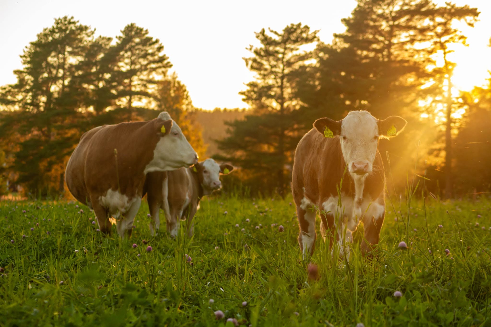
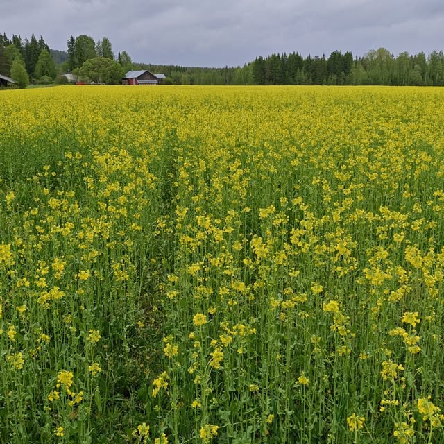

Laukaa · Keski-Suomi
Vahvaa naudanlihaa ja puhdasta viljaa Laukaasta
Kaskitaival Oy on Anna ja Matti Oksasen perheyritys Laukaasta. Kasvatamme pihvivasikoita sekä viljelemme säilörehua ja viljaa ilman kasvinsuojeluaineita ja väkilannoitteita.

Tarinamme
Anna ja Matti Oksanen, Kaskitaipaleen tila
Kaskitaival Oy:n toiminta yhdistää pihvivasikoiden kasvatuksen sekä säilörehun ja viljan viljelyn. Tilan toiminnasta vastaavat yrittäjäpariskunta Anna ja Matti Oksanen, yhdessä taitavan tiimin kanssa. Kantavana ajatuksena kaikessa toiminnassa on luonnonmukaisuus, laadukkuus sekä vahvat, hyvinvoivat eläimet.
- Viljat viljellään ilman kasvinsuojeluaineita ja väkilannoitteita
- Löydät meidät myös Facebookista ja Instagramista
- Hauska tieto: perheellä on myös oma lähdevesibrändi Hietasyrjän Halla
Valikoimastamme
Viljaa ja luontoa lähelläsi
Vilja eläinten ruokintaan
Kauraa, ohraa, vehnää ja rypsiä suoraan tilalta, saatavana säkeissä 2-25 kg tai noin 500 kg suursäkissä.
Pihvivasikat
Simmental-rotuisia pihvivasikoita, joita kasvatetaan säilörehulla ja tilan omalla viljalla.
Linnunruokaseos
Maistuva sekoitus vehnää, rypsiä ja kauraa lintujen talviruokintaan. 2 kg pussi 4 €, 8 pussia 29 €.
EU-hanke
Kotimainen linnunruokaseos, kehitetty Leader-tuella
Olemme kehittäneet lintujen ruokintaan tuotetun siemenseoksen tuotantoprosessia sekä tuotteen ulkoasua. Kehittämistyöhön olemme saaneet EU:n maaseuturahoitusta Leader JyväsRiiheltä. Tavoitteenamme on tehostaa elintarvikeviljan sivuvirtojen hyötykäyttöä ja tuoda markkinoille kotimainen oman tilan siemensekoitus.
Arvomme
Miten pidämme tilasta huolta
Vahvat eläimet
Vahvat, hyvinvoivat eläimet ovat kantava ajatus kaikessa toiminnassamme.
Luonnonmukaisuus
Viljat kasvavat ilman kasvinsuojeluaineita tai väkilannoitteita.
Perheyritys
Anna ja Matti Oksasen luotsaama perheyritys, taitavan tiimin tukemana.
Uutta kehitämme rohkeasti
EU:n Leader-rahoituksen turvin kehitämme uusia, kotimaisia tuotteita.
Kuvia tilalta
Katso millaista arki on Kaskitaipaleella
Kiinnostuitko tuotteistamme?
Ota yhteyttä ja kysy lisää viljasta, vasikoista tai linnunruoasta.
Yhteystiedot
Ota yhteyttä ja kysy lisää
-
Juha Kankkusen tie 12, 41370 LaukaaKeski-Suomi
-
040 570 1814Soita tai laita viestiä
-
sales.kaskitaival@gmail.comVastaamme mielellämme
-
Kaskitaival OyAjankohtaiset kuulumiset Facebookissa